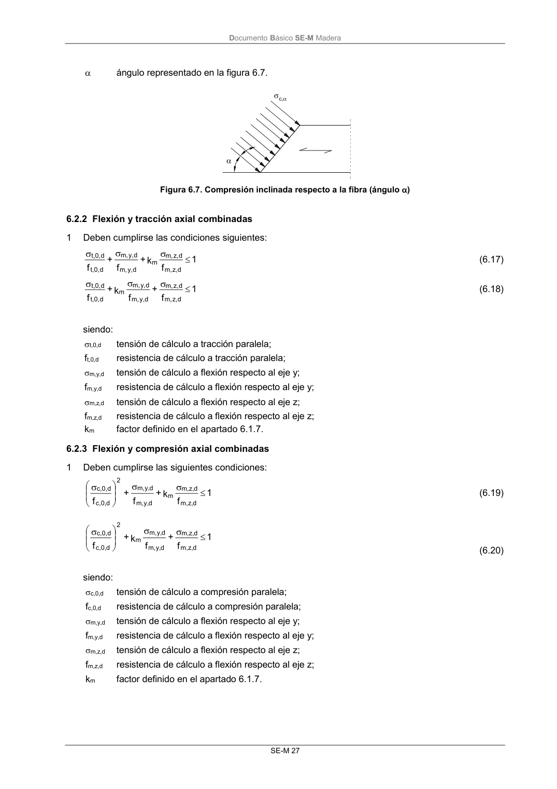

DB-SE-M · 6.2.2 Flexión y tracción axial combinadas · versión 2019-12-20 · capa oficial
Formatos: JSON compacto · Markdown · PDF fuente
Ámbito del documento · texto del ámbito · documento y tablas
ID técnico a0072 · PDF pág. 33 · jerarquía no validada por persona · contrastado con el literal de la página 33 (candidato tipográfico); no validado por persona · padre: a0070
6.2.2 Flexión y tracción axial combinadas 1 Deben cumplirse las condiciones siguientes: 1 f k + f + f d z, m, d z, m, m d y, m, d y, m, d t,0, d t,0, (6.17) 1 f + f k + f d z, m, d z, m, d y, m, d y, m, m d t,0, d t,0, (6.18) siendo: t,0,d tensión de cálculo a tracción paralela; ft,0,d resistencia de cálculo a tracción paralela; m,y,d tensión de cálculo a flexión respecto al eje y; fm,y,d resistencia de cálculo a flexión respecto al eje y; m,z,d tensión de cálculo a flexión respecto al eje z; fm,z,d resistencia de cálculo a flexión respecto al eje z; km factor definido en el apartado 6.1.7.

PDF fuente redistribuible: copia fiel enlazada en esta página (SHA256 verificado).